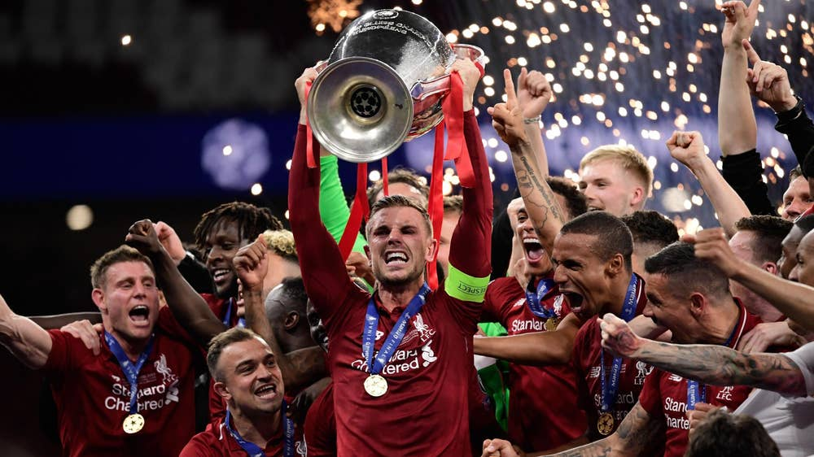

About Me

Hello there, my name is Scott Daniels, and welcome to my portfolio! I'd like to tell you a little bit about myself.
With regard to my professional career, I currently work for a utility company as a Firewall Administrator. I have been there for a little over a year, and have spend a significant time scripting and automating certain operational tasks. Before that I worked for the local municipality, during my time there, I worked on the Network Operations team, and I went from being a Junior Network Engineer up to the title of Sr. Network Architect. I'm currently pursuing Web Development in order to broaden my skillset and build out custom tools in the form of web applications.
With regard to my personal life, I was recently married in November of 2018. My wife and I have two cats, Hank and Penny. They are both completely spoiled. I'm also a massive Liverpool Fan.
